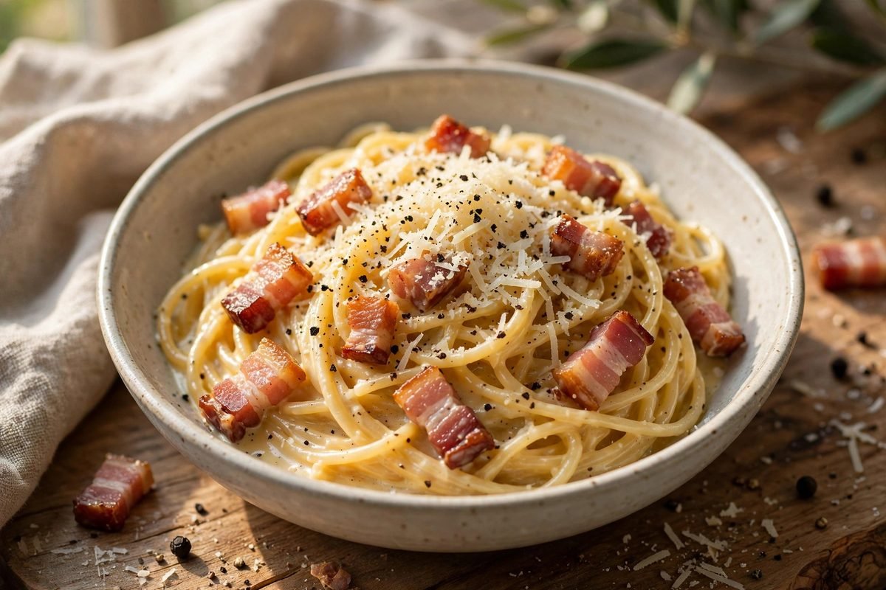

Home › Guides
Spaghetti Carbonara: The Real Recipe, No Cream

Carbonara is one of the most misunderstood dishes in the world. Outside Italy it is often made with cream, garlic, and bacon, and served as a heavy, pale sauce. Real carbonara has none of those things. It is eggs, Pecorino Romano, guanciale, and black pepper, tossed with hot spaghetti so the heat of the pasta turns the eggs into a glossy, golden sauce. It takes fifteen minutes, and it is worth learning properly.
The ingredients
You need spaghetti, guanciale, eggs, Pecorino Romano, and black pepper. Guanciale is cured pork cheek, and it is the traditional meat. Pancetta is an acceptable substitute, but bacon is not, because it is smoked and tastes wrong in this dish. Use whole eggs, or a mix of whole eggs and yolks, about one egg per person plus one extra yolk.
Pecorino Romano is sharp, salty, and essential. Parmesan is milder and is not a substitute, though some cooks use a mix. Grate the cheese finely and use plenty of black pepper, freshly ground, because pepper is a main flavour here, not a garnish.
The technique
Cook the guanciale in a dry pan over medium heat until crisp and golden, then take the pan off the heat. The fat it releases is part of the sauce. While the pasta cooks, whisk the eggs with the grated Pecorino and a generous amount of black pepper into a thick paste.
Drain the pasta, saving a cup of the cooking water, and tip the hot pasta into the pan with the guanciale. Off the heat, add the egg mixture and toss quickly and constantly, adding a splash of pasta water to loosen the sauce. The residual heat cooks the eggs into a creamy coating. Work fast, because if the pan is too hot the eggs scramble.
Common mistakes
The most common mistake is adding cream. Cream makes the sauce heavy and dull, and it is not part of the dish. The second mistake is cooking the eggs in the pan over the heat, which turns them into scrambled eggs. Always take the pan off the heat before adding the eggs.
Other mistakes include using bacon, adding garlic or onion, and using too little pepper or cheese. Carbonara is a simple dish, and every ingredient has to earn its place. If you change one, you change the dish.
Serving carbonara
Serve carbonara immediately, in warm bowls, with extra Pecorino and black pepper on the table. It does not wait well, because the sauce thickens as it cools and the pasta absorbs it. Make only as much as you can eat at once.
Carbonara is a complete meal on its own. A simple salad or some crusty bread is all it needs. Do not reheat leftovers in the microwave, which scrambles the eggs; if you must reheat, do it gently in a pan with a splash of water.
Carbonara for a crowd
Carbonara is easy for two people and tricky for ten, because the sauce must be tossed quickly and served at once. The solution is to cook the pasta in two batches, and to make the egg mixture in a large bowl rather than in the pan. Toss each batch separately, and serve it as soon as it is ready.
Keep the serving bowls warm, and have the extra Pecorino and black pepper on the table. Do not try to keep carbonara warm in the oven, because the eggs will overcook and the sauce will turn grainy. Cook it, toss it, and serve it, and let the second batch follow a few minutes later.
Frequently Asked Questions
Does real carbonara have cream?
No. Real carbonara is eggs, Pecorino Romano, guanciale and black pepper. The creaminess comes from the eggs and pasta water.
Can I use bacon instead of guanciale?
Pancetta is a reasonable substitute. Bacon is smoked and changes the flavour, so it is best avoided.
Why did my eggs scramble?
The pan was too hot when you added the eggs. Take the pan off the heat first and toss quickly with a splash of pasta water.